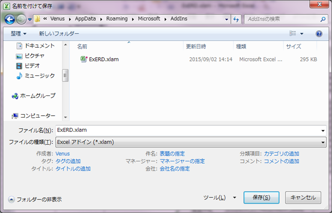

ExcelERD |
以下のような場合、ExcelERD を Excel アドインとして使用できます。
Windows 7 ＋ Excel2010 の場合を例に手順を説明します。
ExcelERD.xlsmを起動し、「メニュー」 - 「ファイル」 - 「名前をつけて保存」 、ファイルの種類にて、「Excel アドイン (*.xlam)」を選択し、保存します。

Excelを起動し、リボンメニュー「開発」-「アドイン」、アドインダイアログボックスにて、「Exerd」にチェックし、OKをクリックします。

以上の手順で、Excelの起動時に常に ExcelERD が起動されるようになります。
アドインの実体は、%ユーザディレクトリ%\AppData\Microsoft\AddIns\ExERD.xlam に作成されます。 削除する場合、このファイルを削除してください。
上記手順では、設定ファイルが作成されませんので、ExERD.xlsm と同じディレクトリにある、ExERD.ini を、 %ユーザディレクトリ%\AppData\Microsoft\AddIn にコピーするか、ExcelERD の各タブにて、 「初期値に戻す」～ 「適用」 を実行してください。